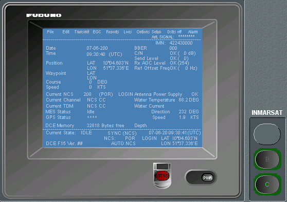

Inmarsat C
El equipo Inmarsat C proporciona comunicaciones télex, servicios de información de seguridad marítima, transmisión de mensajes escritos previamente preparados y transmisión de llamadas de emergencia con un solo botón. Cada puesto del simulador va equipado con un terminal Inmarsat C simulado por software mimético del equipo Furuno FELCOM-15.

El usuario puede realizar las siguientes llamadas: llamada de rutina, llamada de socorro inmediata (pulsando el botón de socorro) y llamada de socorro con datos. También puede tener acceso al servicio EGC (Enhanced Group Call).
El servicio EGC facilita la transmisión de mensajes desde una estación costera a las estaciones de Inmarsat, a buques particulares, a grupos de buques o buques situados dentro de un área geográfica determinada. Hay dos tipos de servicios EGC: SafetyNET y FleetNET.
El instructor puede componer mensajes SafetyNET. Para ello dispone de un diálogo de composición de mensajes, con posibilidad de editar el mensaje, almacenarlo y recuperarlo para su posterior envío.
Una vez compuesto o recuperado, el instructor puede solicitar el envío del mensaje, decidiendo previamente cual de los tres canales dedicados al SafetyNET debe usar. Para facilitar su elección se le muestra la NAVAREA asociada a cada uno de los tres canales, y cual será el siguiente mensaje que se enviará, mostrando el tiempo que queda para que se envíe.
El instructor puede componer mensajes FleetNET. Para ello dispone de un diálogo de composición de mensajes, con posibilidad de editar el mensaje, almacenarlo y recuperarlo para su posterior envío.
Una vez compuesto o recuperado, el instructor puede solicitar el envío del mensaje indicando el destinatario, pudiendo elegir entre una NAVAREA o una estación Inmarsat.